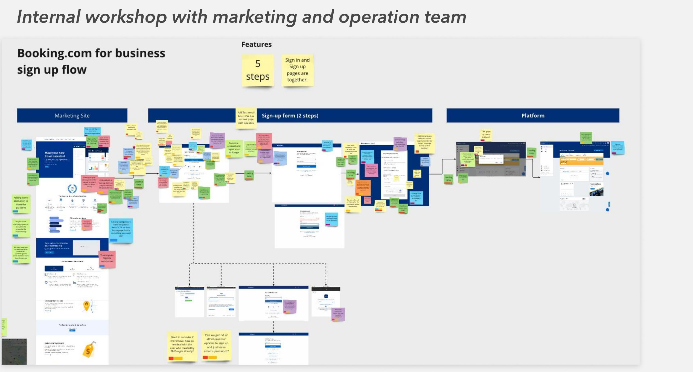
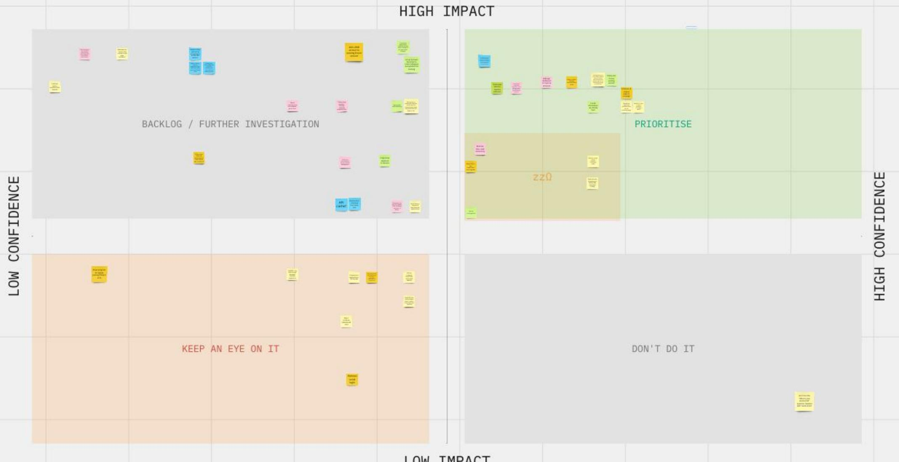
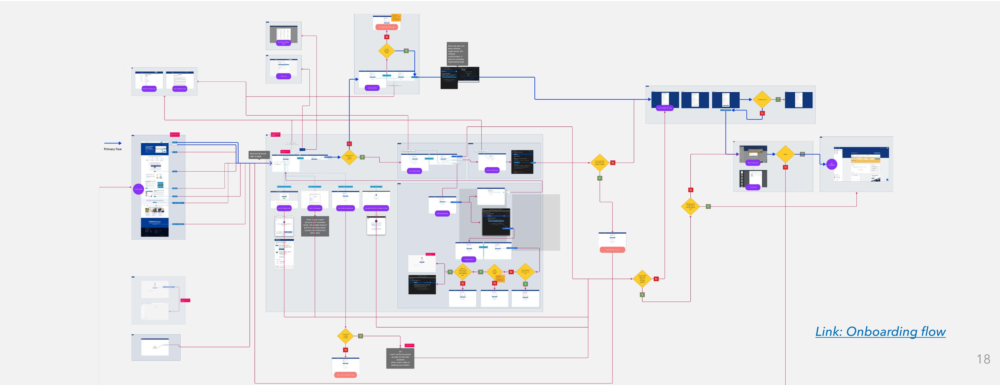
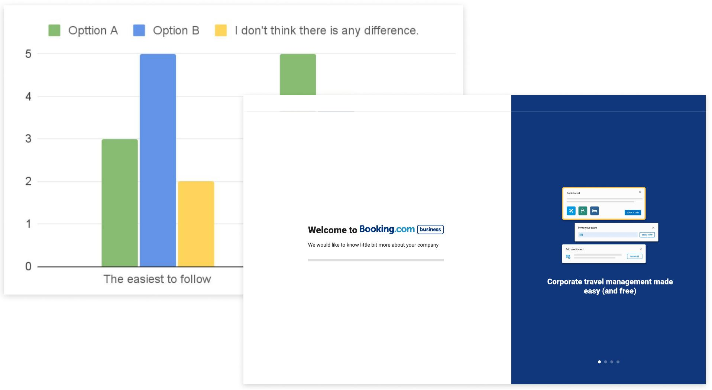
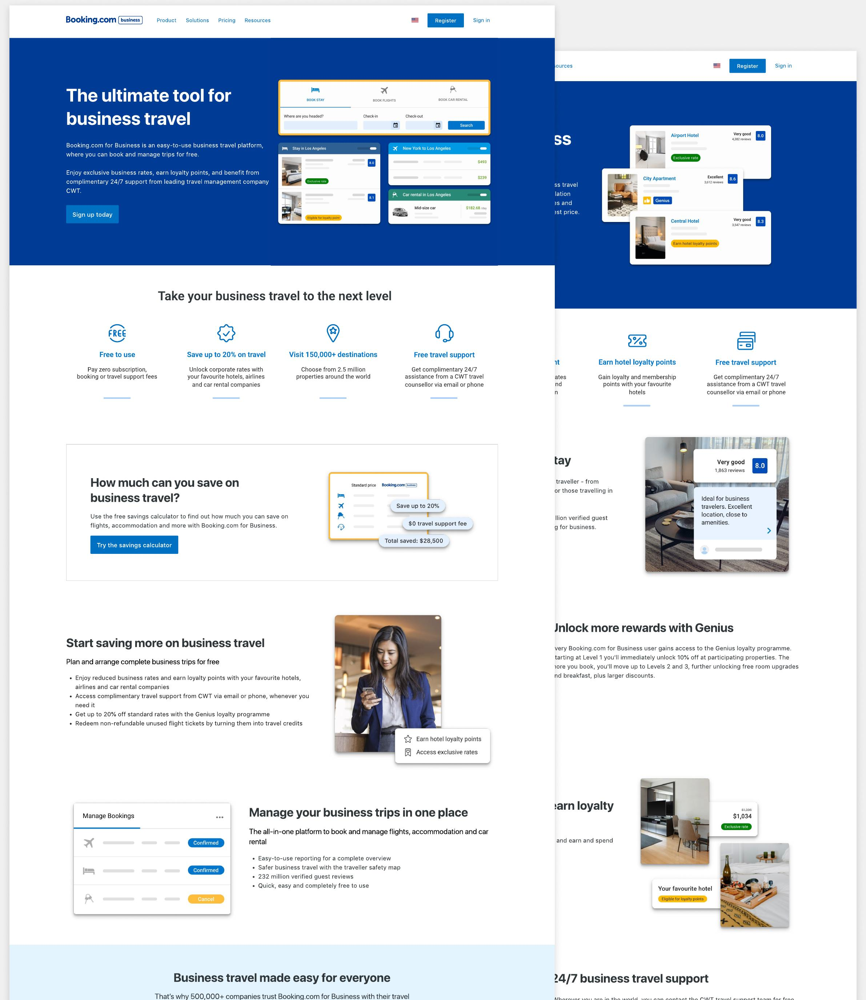
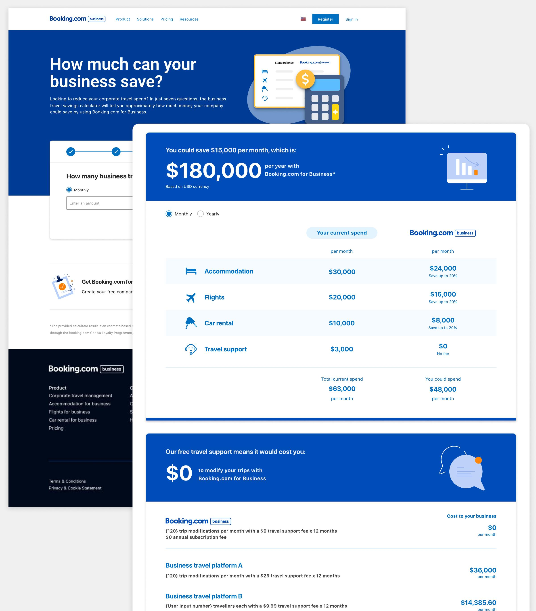
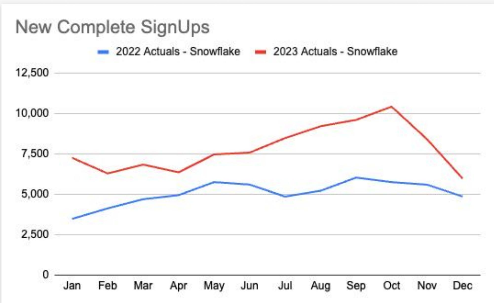
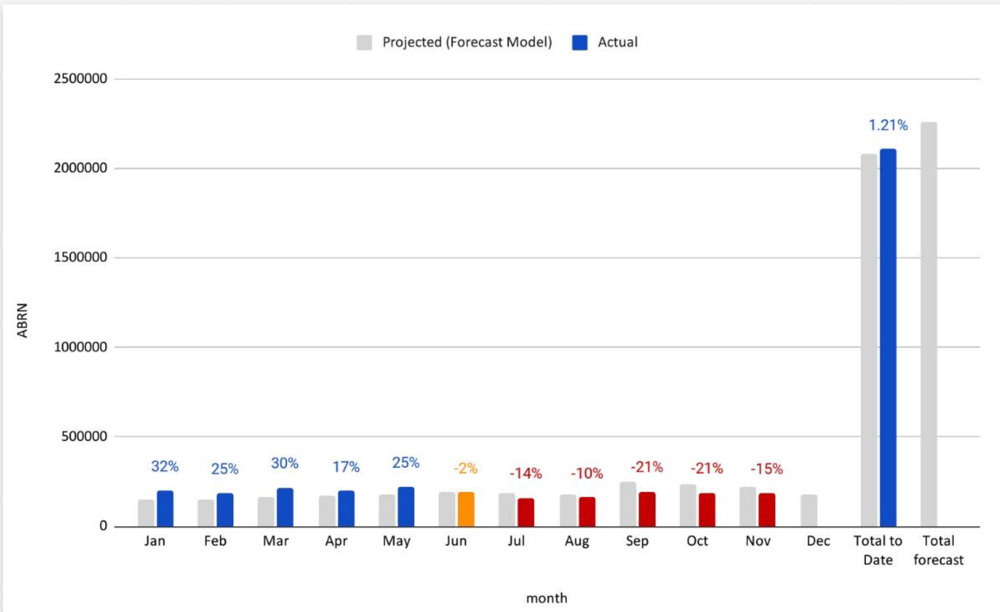

This one’s locked.
This one isn’t public. Marketing Transformation requires a passcode.
No passcode? Reach out
This one isn’t public. Marketing Transformation requires a passcode.
No passcode? Reach out
When Booking.com for Business partnered with CWT, a full go-to-market had to ship in one year: a new sign-up journey, a site revamp, a savings calculator, email campaigns, and a social series. I led design across all five — as facilitator, prioritizer, and quality bar — to 33,782 companies acquired.
00 Overview
This wasn't one design problem — it was five, running in parallel, across five organizations. The B4B–CWT partnership gave us new services and exclusive rates worth talking about; the acquisition OKR gave us a number to hit. My job was less about pushing pixels and more about making sure five workstreams shipped as one coherent story.
New TMC services had to reach customers through every channel at once — sign-up flow, marketing site, tools, email, and social — with design quality consistent across an external CMS vendor, a partner company, and internal teams.
33,782 SME companies acquired against a 30,000 goal. 87,992 sign-ups, up 44% year-over-year — with the upward trend accelerating right after the TMC content launch in June.
Facilitated discovery workshops, ran the prioritization, paired with vendor and partner designers, directed copy and creative — and kept every initiative accountable to the same acquisition goal.
01 Context
The CWT partnership made B4B genuinely more valuable — comprehensive travel services and exclusive rates. But value customers never hear about doesn't convert. We structured the go-to-market as a portfolio of five initiatives across two tracks: fix the experience, then amplify it.
Five organizations shipped this together: the B4B marketing and product teams, our UX copywriter, partner company Serko, and CMS vendor Rocket Minds. Keeping design coherent across that many hands was the real management challenge.
02 Clarify Problems
The sign-up journey was bleeding users, but every team had a different theory about why. Instead of picking one, I facilitated two workshops — one with the B4B product team, one with Serko — and made the group prioritize every idea on impact × confidence before anything got built.


Paired with a Serko designer, I charted the entire sign-up across three systems (Rocket Minds CMS, Booking.com Authentication, the B4B platform) and five teams. This map became the shared source of truth for where users dropped and who owned each fix.

Competitor research across three business-travel products set the benchmark — domain-email registration to cut fake companies, clearer registration questions, and a free-plan-first mental model. An unmoderated usability test with 8 recent business bookers pinpointed our own failures:
Registration submissions stalled past 30 seconds — long enough for users to assume the product was broken and abandon.
Users couldn't find where to create an account on the marketing site — the single most important action had no clear front door.
Users weren't sure what the company registration was asking for, or whether they were signing up for the right thing.
03 Shape Concept
From the prioritization, two sign-up solutions cleared the bar — one engineering-dependent, one quick win. I deliberately paired each with the right owner rather than designing both alone.
Solution 1
While Serko's engineers optimized the 30-second submission delay, I paired with their designer on two loading-animation concepts to reduce abandonment in the meantime — then user-tested both to pick the one that actually lowered anxiety. Fix the cause and the symptom in parallel.

Solution 2
The entry-point problem got the quick win: embed the sign-up directly into the marketing site's landing page, so creating an account is the first thing a visitor sees — not something hunted for in a menu.

04 Orchestrate & Ship
While the sign-up work ran, I directed the marketing-strategy track — where my leverage came from briefs, pairing, and review rather than owning every artboard.
Marketing Site Revamp · 6 months
I managed the TMC content redesign end-to-end: restructured 12 pages, directed creative for 100+ images across 8 languages, and worked with Rocket Minds to build a custom CMS function so the marketing team could own TMC content without a designer in the loop.

Saving Calculator · 3 months
I built the savings calculator concept from scratch — market review, savings formulas, and design — so prospects could see "you could save $180,000 per year" instead of being told. By end of August, 800 users had completed it, with 12% clicking through to sign up.

Four dispatches over three months. I worked with our UX writer on distinct copy and design for four segments — active admins, active travellers, inactive admins, inactive travellers — because a re-activation message and a power-user upsell should never read the same.
Creative direction for the TMC launch series on LinkedIn — "Save up to 20%", "$0 travel support fee", "All of the features, none of the costs" — keeping the visual system consistent with the revamped site so every touchpoint reinforced the same story.
05 Impact
By year-end, the portfolio delivered — and the sign-up trend visibly bent upward after the TMC content launch in June.


06 Reflection
This was the year my impact stopped being measured in screens and started being measured in what other people shipped.
Facilitating two good workshops moved more metrics than any single design I could have produced. Prioritization frameworks, journey maps, and clear briefs turned five teams and two vendors into one design organization — that's the design-manager's craft.
Working through Rocket Minds and Serko meant the quality bar had to live in reviews, pairing sessions, and systems — not in my own Figma file. Where I'd tighten it next time: bring the vendors into user-testing sessions earlier, so they hear the users I'm advocating for firsthand.
Every initiative in this portfolio carried a number — acquisition, activation, ABRN. Committing design work to marketing OKRs made trade-offs faster, made wins visible to leadership, and made the case that design belongs in the go-to-market room from day one.